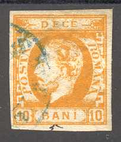
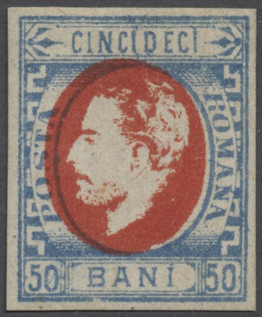
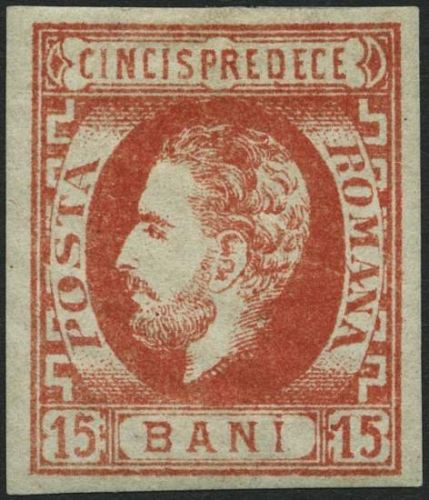
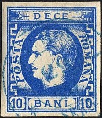

Return To Catalogue -Rumania 1871 issue (king with full beard), forgeries part 1 - Rumania 1871 issue (king with full beard), forgeries part 2 - Rumania - Cancels on stamps of Rumania
Note: on my website many of the
pictures can not be seen! They are of course present in the
catalogue;
contact me if you want to purchase it.
For stamps of Rumania, issued earlier, click here.
Imperforate




5 b orange 10 b yellow 10 b blue (2 types, see above) 15 b red 25 b brown 50 b blue and red (1872) Perforated


5 b red 10 b blue 25 b brown
The perforation of the perforated stamps is 12 1/2.
Value of the stamps |
|||
vc = very common c = common * = not so common ** = uncommon |
*** = very uncommon R = rare RR = very rare RRR = extremely rare |
||
| Value | Unused | Used | Remarks |
| Imperforate | |||
| 5 b | R | R | |
| 10 b yellow | RR | R | |
| 10 b blue | RR | RR | Reissued in 1872 in a slightly different design. |
| 15 b | RR | RRR | |
| 25 b | RR | R | |
| 50 b | RRR | RRR | Exists without center (printer's waste: source: Serrane guide) |
| Perforated | |||
| 5 b | RR | R | |
| 10 b | RR | R | |
| 25 b | *** | *** | |
Subtypes (see http://www.romaniastamps.com/sc/molcar/carframe.htm):


Two stamps of Type 1 of the 5 bani stamps; short leg of
"M" and scratch in lower part of upper left circle. The
upper left corner has some damage. And Type 4.


Type 6 of the 5 bani stamp with an extension at the bottom right
hand corner and a break in the lower right of the upper right
hand side cross.

Subtype 5 of the 10 bani perforated stamp; The "R" of
"ROMANA" has a small line below it; the "O"
of this word is connected to the inner ellipse.


Subtype 3 of the 10 bani yellow stamp; with the dot in front of
the right "10" missing. A break in the bottom of the
"S" of "POSTA" and the "T" of this
word connected to the line to the left of it. To the right of the
"R" of "ROMANA" there is part of a (smaller)
extra Greec ornament. Also Type 10, with a missing upper right
part of the "N" of "BANI".

This is type 6 (of the 7 types) of the re-issue of the 10 b blue
in 1872 (with the "N" and second "A" of
"ROMANA" connected with a scratch, the head is tilted
to the back; note the distance between the back of the head and
the letters 'RO'); it has a blotch of ink connecting the
"O" of "ROMANA" with the frameline to the
right of it. Also the left box with "10" is connected
to the bottom frame through a blue patch of ink. In general it is
badly printed.
All 7 types of the 10 b re-issue.
The 7 types of the 10 bani re-issue have the
following characteristics:
Type 1: A break in the upper frameline above the "C" of
"DECE"
Type 2: A break in the thick frameline below the second
"E" of "DECE"
Type 3: The second "A" of "ROMANA" is
connected to the central design
Type 4: The "A" of "POSTA" has a spur at the
bottom right.
Type 5: ?
Type 6: A very prominent dot in the "O" of
"ROMANA"
Type 7: The first "E" of "DECE" is connected
to the frameline below it.

Type 3 of the 15 bani stamp; it has a scratch through the
"A" of "ROMANA" and some smudges in the top
parts of the "1" and "5" of the right hand
side "15".


Most likely type 8 of the 25 bani. The crossbar of the
"A" of "POSTA" is broken(??).

50 bani type 1, the Greec ornament has an extra vertical line
just next to the "RO" of "ROMANA".
Rumania 1871 issue (king
with full beard), forgeries part 1
Rumania 1871 issue (king with full beard),
forgeries part 2

For stamps in a very similar design as above (King without beard,
1869 issue), click here.
For issues of Rumania after 1872 click here.
{kind=link}
{kind=link}